Uitrusting, schilden en accessoires
Uitrusting, schilden en accessoires in Valheim – 148 voorwerpen met bioom, vindplaats, benodigd gereedschap, recept en gebruik.
Geen voorwerp gevonden.
 Ashen Cape
Ashen Cape
Thin metal threads are woven into this cape to create an intricate pattern, like a destiny woven by the Norns themselves.
Zo kom je eraan
- Maken: Black Forge (niveau 3) uit 6 ×
 Asksvin Hide, 2 ×
Asksvin Hide, 2 ×  Morgen Sinew, 5 ×
Morgen Sinew, 5 ×  Vlammetaal · per upgrade: 2 × Asksvin Hide
Vlammetaal · per upgrade: 2 × Asksvin Hide
 Asksvin Cloak
Asksvin Cloak
This thick cape catches the wind, not unlike the sail of a ship.
Zo kom je eraan
- Maken: Galdr Table (niveau 2) uit 6 × Asksvin Hide, 2 × Morgen Sinew · per upgrade: 2 × Asksvin Hide
 Blue Dress with Beads
Blue Dress with Beads
A fancy blue dress, with beads and bronze fibula brooches. Excellent for a feast!
Zo kom je eraan
- Kopen: Hildir · 550 munten · na het terugbrengen van Hildir's Bronze Chest
 Blue Dress with Shawl
Blue Dress with Shawl
A blue dress, with a green shawl around the shoulders. Warm and stylish!
Zo kom je eraan
- Kopen: Hildir · 450 munten · na het terugbrengen van Hildir's Silver Chest
 Blue Tied Headscarf
Blue Tied Headscarf
A blue practical headscarf.
Zo kom je eraan
- Kopen: Hildir · 200 munten · na het terugbrengen van Hildir's Brass Chest
 Blue Tunic with Beads
Blue Tunic with Beads
A blue tunic worn with beads and silver jewelry. Sure to attract attention from other vikings.
Zo kom je eraan
- Kopen: Hildir · 550 munten · na het terugbrengen van Hildir's Bronze Chest
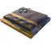
Blue Tunic with CapeA blue tunic, worn with a fashionable cape made from fine brown wool.
Zo kom je eraan
- Kopen: Hildir · 450 munten · na het terugbrengen van Hildir's Silver Chest
 Botten scutum
Botten scutum
De botten van dode krijgers zijn een prima bescherming.
Zo kom je eraan
- Maken: Werkbank (niveau 3) uit 10 ×
 Hout, 10 ×
Hout, 10 ×  Bottenfragmenten, 3 ×
Bottenfragmenten, 3 ×  Skelettrofee · per upgrade: 5 × Hout, 5 × Bottenfragmenten
Skelettrofee · per upgrade: 5 × Hout, 5 × Bottenfragmenten
 Bracelets of the Brave
Bracelets of the Brave
Your mind hardens, as do your blows.
Zo kom je eraan
- Maken: Smidse uit 5 ×
 Zwart metaal, 5 ×
Zwart metaal, 5 ×  Hossenpels, 1 ×
Hossenpels, 1 ×  Hossentrofee
Hossentrofee
 Breastplate of Ask
Breastplate of Ask
The first man in Midgard knew how to guard his most vital organs, perhaps with a breastplate just like this one.
Zo kom je eraan
- Maken: Black Forge (niveau 3) uit 15 ×
 Linnen draad, 4 × Hossenpels, 10 × Asksvin Hide · per upgrade: 10 × Linnen draad, 2 × Hossenpels, 5 × Asksvin Hide
Linnen draad, 4 × Hossenpels, 10 × Asksvin Hide · per upgrade: 10 × Linnen draad, 2 × Hossenpels, 5 × Asksvin Hide
 Breastplate of the Protector
Breastplate of the Protector
Fur and hide and metal all work in tandem to ward off an enemy's blows.
Zo kom je eraan
- Maken: Black Forge (niveau 4) uit 20 ×
 Bloodgold, 1 ×
Bloodgold, 1 ×  Mould: Breastplate of the Protector, 8 ×
Mould: Breastplate of the Protector, 8 ×  Moose Hide, 4 ×
Moose Hide, 4 ×  Leather Straps · per upgrade: 15 × Bloodgold, 3 × Moose Hide, 3 × Leather Straps
Leather Straps · per upgrade: 15 × Bloodgold, 3 × Moose Hide, 3 × Leather Straps - Bereiden: Frost Foundry uit
 Cast: Breastplate of the Protector
Cast: Breastplate of the Protector
 Brimstone
Brimstone
It's warm, as if filled with a lifesblood of its own.
Zo kom je eraan
- Maken: Black Forge uit 5 × Vlammetaal, 5 ×
 Sulfur, 1 ×
Sulfur, 1 ×  Molten Core, 1 ×
Molten Core, 1 ×  Morgen Trophy
Morgen Trophy
 Bronze Pendant
Bronze Pendant
A beautiful pendant, harbouring the endurance of a bear.
Zo kom je eraan
- Maken: Smidse uit 5 ×
 Brons, 1 ×
Brons, 1 ×  Bear Trophy, 3 ×
Bear Trophy, 3 ×  Robijn
Robijn
 Bronzen beenbeschermers
Bronzen beenbeschermers
Bewerkte bronzen scheenplaten die je benen beschermen.
Zo kom je eraan
- Maken: Smidse uit 5 × Brons, 2 ×
 Hertenpels · per upgrade: 3 × Brons
Hertenpels · per upgrade: 3 × Brons
 Bronzen beukelaar
Bronzen beukelaar
Een schild van gepolijst brons, goed om een wapen of twee af te weren.
Zo kom je eraan
 Bronzen helm
Bronzen helm
Dit helpt om je hersens veilig in je schedel te houden.
Zo kom je eraan
- Maken: Smidse uit 5 × Brons, 2 × Hertenpels · per upgrade: 3 × Brons
 Bronzen kuras
Bronzen kuras
Een borstplaat van gehamerd brons.
Zo kom je eraan
- Maken: Smidse uit 5 × Brons, 2 × Hertenpels · per upgrade: 3 × Brons
 Brown Dress with Beads
Brown Dress with Beads
A fancy brown dress, with beads and silver fibula brooches. Excellent for a feast!
Zo kom je eraan
- Kopen: Hildir · 550 munten · na het terugbrengen van Hildir's Bronze Chest
 Brown Dress with Shawl
Brown Dress with Shawl
A brown dress, with a matching shawl around the shoulders. Warm and stylish!
Zo kom je eraan
- Kopen: Hildir · 450 munten · na het terugbrengen van Hildir's Silver Chest
 Brown Fur Cap
Brown Fur Cap
A warm fur cap, made from the finest leather.
Zo kom je eraan
- Kopen: Hildir · 200 munten · na het terugbrengen van Hildir's Brass Chest
 Cape of the Caller
Cape of the Caller
A strange magic is woven into this cape, making it both light and warm.
Zo kom je eraan
- Maken: Galdr Table (niveau 4) uit 6 ×
 Seal Pelt, 2 ×
Seal Pelt, 2 ×  Nornathread, 5 × Bloodgold, 15 ×
Nornathread, 5 × Bloodgold, 15 ×  Refined Eitr · per upgrade: 3 × Seal Pelt, 1 × Nornathread, 2 × Bloodgold, 5 × Refined Eitr
Refined Eitr · per upgrade: 3 × Seal Pelt, 1 × Nornathread, 2 × Bloodgold, 5 × Refined Eitr
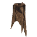
Cape van hertenleerRustieke elegantie.
Zo kom je eraan
- Maken: Werkbank (niveau 2) uit 4 × Hertenpels, 5 × Bottenfragmenten · per upgrade: 4 × Hertenpels, 5 × Bottenfragmenten
 Cape van trollenleer
Cape van trollenleer
Trollenleer is taai en soepel.
Zo kom je eraan
- Maken: Werkbank (niveau 2) uit 10 ×
 Trollenhuid, 10 × Bottenfragmenten · per upgrade: 5 × Trollenhuid, 5 × Bottenfragmenten
Trollenhuid, 10 × Bottenfragmenten · per upgrade: 5 × Trollenhuid, 5 × Bottenfragmenten
 Carapace Breastplate
Carapace Breastplate
A breastplate crafted from the burnished carapace of a giant insect.
Zo kom je eraan
- Maken: Black Forge uit 20 ×
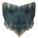
Carapace, 3 × Scale Hide, 5 ×
Scale Hide, 5 × 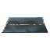
IJzer, 4 ×Refined Eitr · per upgrade: 10 × Carapace, 1 × Scale Hide, 2 × Refined Eitr
 Carapace Buckler
Carapace Buckler
The skull of a seeker is solid but not heavy, which makes it perfect for a small and agile shield.
Zo kom je eraan
- Maken: Black Forge uit 16 × Carapace, 3 × Scale Hide, 10 × Refined Eitr · per upgrade: 8 × Carapace, 3 × Scale Hide, 3 × Refined Eitr
 Carapace Greaves
Carapace Greaves
Leg guards of a rigid carapace.
Zo kom je eraan
- Maken: Black Forge uit 20 × Carapace, 3 × Scale Hide, 5 × IJzer, 4 × Refined Eitr · per upgrade: 10 × Carapace, 1 × Scale Hide, 2 × Refined Eitr
 Carapace Helmet
Carapace Helmet
People might say you look like a giant ant. But they will only say it once.
Zo kom je eraan
- Maken: Black Forge uit 16 × Carapace, 3 × Scale Hide, 2 ×
 Mandible, 4 × Refined Eitr · per upgrade: 8 × Carapace, 1 × Scale Hide, 2 × Refined Eitr
Mandible, 4 × Refined Eitr · per upgrade: 8 × Carapace, 1 × Scale Hide, 2 × Refined Eitr
 Carapace Shield
Carapace Shield
The almost unbreakable carapace of your enemies makes an excellent shield.
Zo kom je eraan
- Maken: Black Forge uit 20 × Carapace, 3 × Scale Hide, 10 × Refined Eitr · per upgrade: 10 × Carapace, 3 × Scale Hide, 3 × Refined Eitr
 Celebratory Cap
Celebratory Cap
You simply can't help but feel happy when donning this cap!
Zo kom je eraan
- Maken: Werkbank (niveau 2) uit 2 × Hertenpels, 1 × Brons, 1 ×
 Bear Hide, 1 ×
Bear Hide, 1 ×  Amberparel · per upgrade: 1 × Hertenpels, 1 × Brons
Amberparel · per upgrade: 1 × Hertenpels, 1 × Brons
 Chestpiece of the Vanguard
Chestpiece of the Vanguard
Expertly crafted leather armour, offering excellent protection without limiting a warrior's movements.
Zo kom je eraan
- Maken: Black Forge (niveau 4) uit 12 × Bloodgold, 1 ×
 Mould: Chestpiece of the Vanguard, 8 ×
Mould: Chestpiece of the Vanguard, 8 ×  Elaking Hair Bundle, 4 × Leather Straps · per upgrade: 6 × Bloodgold, 4 × Elaking Hair Bundle, 2 × Leather Straps
Elaking Hair Bundle, 4 × Leather Straps · per upgrade: 6 × Bloodgold, 4 × Elaking Hair Bundle, 2 × Leather Straps - Bereiden: Frost Foundry uit
 Cast: Chestpiece of the Vanguard
Cast: Chestpiece of the Vanguard
 Crown of Roots
Crown of Roots
A painful, yet intricate headpiece.
Zo kom je eraan
- Kopen: The Bog Witch · 3.000 munten · na het verslaan van Writhan
 Crown of Valheim
Crown of Valheim
A glorious reward for the truly worthy.
Zo kom je eraan
- Maken: Black Forge (niveau 4) uit 5 × Bloodgold, 1 ×
 Crown Jewel
Crown Jewel
 Crystal Heart
Crystal Heart
A shard of frozen sorrow. Touching it makes you feel almost numb.
Zo kom je eraan
- Maken: Smidse uit 5 ×
 Zilver, 5 ×
Zilver, 5 ×  Kristal, 1 ×
Kristal, 1 ×  Stenen golemtrofee
Stenen golemtrofee
 Dvergerdiadeem
Dvergerdiadeem
Een draagbare en eeuwigdurende lichtbron voor de kerkeravonturier.
Zo kom je eraan
- Kopen: Haldor · 620 munten
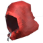
Eitr-weave HoodSorcery shows itself in the eyes, so most mages wear cowls to disguise their occult pursuits.
Zo kom je eraan
- Maken: Galdr Table uit 16 × Linnen draad, 15 × Refined Eitr, 2 × IJzer · per upgrade: 8 × Linnen draad, 5 × Refined Eitr
 Eitr-weave Robe
Eitr-weave Robe
These artfully layered robes have spells and charms sewn into every seam and fold.
Zo kom je eraan
- Maken: Galdr Table uit 20 × Linnen draad, 20 × Refined Eitr, 10 ×
 Veren, 5 × Scale Hide · per upgrade: 10 × Linnen draad, 5 × Refined Eitr
Veren, 5 × Scale Hide · per upgrade: 10 × Linnen draad, 5 × Refined Eitr
 Eitr-weave Trousers
Eitr-weave Trousers
The trousers worn by mages are always especially tight. Discomfort fuels the focus that is needed for magic...
Zo kom je eraan
- Maken: Galdr Table uit 20 × Linnen draad, 20 × Refined Eitr, 10 × Scale Hide · per upgrade: 10 × Linnen draad, 5 × Refined Eitr
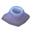
Evasion MantleDance with death as you dodge your enemies' strikes.
Zo kom je eraan
- Maken: Smidse uit 5 × Zwart metaal, 1 ×
 Loederberserkertrofee, 10 × Linnen draad
Loederberserkertrofee, 10 × Linnen draad
 Extravagant Green Cap
Extravagant Green Cap
A warm cap for special occasions.
Zo kom je eraan
- Kopen: Hildir · 250 munten · na het terugbrengen van Hildir's Silver Chest
 Extravagant Orange Cap
Extravagant Orange Cap
A warm cap for special occasions.
Zo kom je eraan
- Kopen: Hildir · 300 munten · na het terugbrengen van Hildir's Bronze Chest
 Feather Cape
Feather Cape
Donning this cape makes you feel lighter, almost as if you could fly!
Zo kom je eraan
- Maken: Galdr Table uit 10 × Veren, 5 × Scale Hide, 20 × Refined Eitr · per upgrade: 2 × Veren, 5 × Scale Hide, 3 × Refined Eitr
 Fenris Coat
Fenris Coat
The beast could draw deep breaths, so that its howl could be heard far across the land.
Zo kom je eraan
- Maken: Werkbank (niveau 2) uit 20 ×
 Fenris Hair, 5 ×
Fenris Hair, 5 ×  Wolvenpels, 10 ×
Wolvenpels, 10 ×  Leren banden · per upgrade: 5 × Fenris Hair, 3 × Wolvenpels, 4 × Leren banden
Leren banden · per upgrade: 5 × Fenris Hair, 3 × Wolvenpels, 4 × Leren banden
 Fenris Hood
Fenris Hood
The eyes of the beast were wise and knowing, so that it could measure the strength of a warrior in one glance.
Zo kom je eraan
- Maken: Werkbank (niveau 2) uit 20 × Fenris Hair, 2 × Wolvenpels, 1 ×
 Cultist Trophy · per upgrade: 5 × Fenris Hair, 4 × Wolvenpels
Cultist Trophy · per upgrade: 5 × Fenris Hair, 4 × Wolvenpels
 Fenris Leggings
Fenris Leggings
The legs of the beast were lean and strong, so that it could leap great strides.
Zo kom je eraan
- Maken: Werkbank (niveau 2) uit 20 × Fenris Hair, 5 × Wolvenpels, 10 × Leren banden · per upgrade: 5 × Fenris Hair, 3 × Wolvenpels, 4 × Leren banden
 Fins of Destiny
Fins of Destiny
Empty your mind as you become shapeless and one with the water.
Zo kom je eraan
- Maken: Smidse uit 5 ×
 Chitine, 5 ×
Chitine, 5 ×  Serpentenschub, 1 ×
Serpentenschub, 1 ×  Serpenttrofee
Serpenttrofee
 Fishing Hat
Fishing Hat
This catchy hat may only be reeled in by the most seasoned adventurers.
Zo kom je eraan
- Maken: Werkbank uit 1 ×
 Baars, 1 ×
Baars, 1 ×  Snoek, 1 ×
Snoek, 1 ×  Tonijn, 1 ×
Tonijn, 1 ×  Tetra, 1 ×
Tetra, 1 ×  Trollfish, 1 ×
Trollfish, 1 ×  Giant Herring, 1 ×
Giant Herring, 1 ×  Grouper, 1 ×
Grouper, 1 ×  Coral Cod, 1 ×
Coral Cod, 1 ×  Anglerfish, 1 ×
Anglerfish, 1 ×  Northern Salmon, 1 ×
Northern Salmon, 1 ×  Magmafish, 1 ×
Magmafish, 1 ×  Pufferfish · per upgrade: 1 × Baars, 1 × Snoek, 1 × Tonijn, 1 × Tetra, 1 × Trollfish, 1 × Giant Herring, 1 × Grouper, 1 × Coral Cod, 1 × Anglerfish, 1 × Northern Salmon, 1 × Magmafish, 1 × Pufferfish
Pufferfish · per upgrade: 1 × Baars, 1 × Snoek, 1 × Tonijn, 1 × Tetra, 1 × Trollfish, 1 × Giant Herring, 1 × Grouper, 1 × Coral Cod, 1 × Anglerfish, 1 × Northern Salmon, 1 × Magmafish, 1 × Pufferfish
 Flametal Breastplate
Flametal Breastplate
This fusion of mysterious flametal and charred bones serves as a protective layer more resilient than anything you could ever find in Midgard.
Zo kom je eraan
- Maken: Black Forge (niveau 3) uit 20 × Vlammetaal, 3 × Asksvin Hide, 5 ×
 Charred Bone, 1 ×
Charred Bone, 1 ×  Morgen Heart · per upgrade: 10 × Vlammetaal, 1 × Asksvin Hide
Morgen Heart · per upgrade: 10 × Vlammetaal, 1 × Asksvin Hide
 Flametal Greaves
Flametal Greaves
Heavy trousers insulate against the heat, while solid greaves keep your shins safe from low blows.
Zo kom je eraan
- Maken: Black Forge (niveau 3) uit 20 × Vlammetaal, 3 × Asksvin Hide, 5 × Charred Bone · per upgrade: 10 × Vlammetaal, 1 × Asksvin Hide
 Flametal Helmet
Flametal Helmet
While you're wearing this helmet, your enemies will think twice before trying to bite your head off.
Zo kom je eraan
- Maken: Black Forge (niveau 3) uit 16 × Vlammetaal, 3 × Asksvin Hide, 2 × Charred Bone, 4 × Refined Eitr · per upgrade: 8 × Vlammetaal, 1 × Asksvin Hide, 2 × Refined Eitr
 Flametal Shield
Flametal Shield
The shield is and always will be a viking's most important weapon.
Zo kom je eraan
- Maken: Black Forge (niveau 3) uit 10 ×
 Ashwood, 8 × Vlammetaal, 2 × Asksvin Hide · per upgrade: 10 × Ashwood, 4 × Vlammetaal, 2 × Asksvin Hide
Ashwood, 8 × Vlammetaal, 2 × Asksvin Hide · per upgrade: 10 × Ashwood, 4 × Vlammetaal, 2 × Asksvin Hide
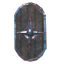
Flametal Tower ShieldThe best defence is a great defence.
Zo kom je eraan
- Maken: Black Forge (niveau 3) uit 15 × Ashwood, 10 × Vlammetaal, 5 × Asksvin Hide · per upgrade: 10 × Ashwood, 4 × Vlammetaal, 2 × Asksvin Hide
 Gebonden schild
Gebonden schild
Gebonden met ijzeren ringen. De vriend van iedere krijger.
Zo kom je eraan
 Gevoerd kuras
Gevoerd kuras
Van stevige maak en sterk genoeg op zelfs de scherpste zwaarden tegen te houden.
Zo kom je eraan
- Maken: Smidse (niveau 2) uit 10 × IJzer, 20 × Linnen draad · per upgrade: 3 × IJzer, 10 × Linnen draad
 Gevoerde helm
Gevoerde helm
Hij zit goed en is goed gemaakt.
Zo kom je eraan
- Maken: Smidse uit 10 × IJzer, 15 × Linnen draad · per upgrade: 5 × IJzer, 10 × Linnen draad
 Gevoerde scheenplaten
Gevoerde scheenplaten
Vakkundig gemaakte beenbescherming.
Zo kom je eraan
- Maken: Smidse (niveau 2) uit 10 × IJzer, 20 × Linnen draad · per upgrade: 3 × IJzer, 10 × Linnen draad
 Green Twisted Headscarf
Green Twisted Headscarf
A fancy green headscarf.
Zo kom je eraan
- Kopen: Hildir · 250 munten · na het terugbrengen van Hildir's Silver Chest
 Grey Fur Cap
Grey Fur Cap
A warm fur cap, made from the finest wool.
Zo kom je eraan
- Kopen: Hildir · 300 munten · na het terugbrengen van Hildir's Bronze Chest
 Harvest Dress
Harvest Dress
When working the fields, it's important to dress accordingly. This long dress keeps your knees covered while you work.
Zo kom je eraan
- Kopen: Hildir · 550 munten · na het terugbrengen van Hildir's Brass Chest
 Harvest Tunic
Harvest Tunic
When working the fields, it's important to dress accordingly. A shorter tunic lets in a cool breeze.
Zo kom je eraan
- Kopen: Hildir · 550 munten · na het terugbrengen van Hildir's Brass Chest
 Headband
Headband
It feels a bit...moist.
Zo kom je eraan
- Kopen: Hildir · 175 munten
 Headdress of the Bear
Headdress of the Bear
Let the primal rage of a mighty bear consume you.
Zo kom je eraan
- Maken: Werkbank (niveau 2) uit 5 × Bear Hide, 1 × Bear Trophy · per upgrade: 2 × Bear Hide
 Headdress of the Caller
Headdress of the Caller
The spirits of the land come as you beckon. Are they fooled by your disguise?
Zo kom je eraan
- Maken: Galdr Table (niveau 3) uit 2 ×
 Moose Sinew, 1 ×
Moose Sinew, 1 ×  Mould: Headdress of the Caller, 1 ×
Mould: Headdress of the Caller, 1 ×  Moose Trophy, 3 × Nornathread · per upgrade: 1 × Moose Sinew, 2 × Nornathread
Moose Trophy, 3 × Nornathread · per upgrade: 1 × Moose Sinew, 2 × Nornathread - Bereiden: Frost Foundry uit
 Cast: Headdress of the Caller
Cast: Headdress of the Caller
 Heart of the Forest
Heart of the Forest
It pulsates with fragments of ancient life.
Zo kom je eraan
- Maken: Smidse uit 5 × Brons, 5 ×
 Oeroud zaad, 1 ×
Oeroud zaad, 1 ×  Grijze dwergsjamaantrofee
Grijze dwergsjamaantrofee
 Helmet of the Protector
Helmet of the Protector
Embellished with the wings of victory.
Zo kom je eraan
- Maken: Black Forge (niveau 4) uit 20 × Bloodgold, 1 ×
 Mould: Helmet of the Protector, 4 × Moose Hide · per upgrade: 15 × Bloodgold, 3 × Moose Hide
Mould: Helmet of the Protector, 4 × Moose Hide · per upgrade: 15 × Bloodgold, 3 × Moose Hide - Bereiden: Frost Foundry uit
 Cast: Helmet of the Protector
Cast: Helmet of the Protector
 Hood of Ask
Hood of Ask
As the first man of Midgard, Ask knew it was important to not draw too much attention to himself.
Zo kom je eraan
- Maken: Black Forge (niveau 3) uit 15 × Linnen draad, 4 × Hossenpels, 10 × Asksvin Hide · per upgrade: 10 × Linnen draad, 2 × Hossenpels, 5 × Asksvin Hide
 Hood of Embla
Hood of Embla
Even the first sorceress valued the mystique of covering one's face. It is rumoured that honouring her this way will make your spells even more powerful.
Zo kom je eraan
- Maken: Galdr Table (niveau 2) uit 16 × Linnen draad, 15 × Refined Eitr, 2 × Asksvin Hide · per upgrade: 8 × Linnen draad, 5 × Refined Eitr
 Hood of the Vanguard
Hood of the Vanguard
Something to protect your neck from the elements as well as from the sharp teeth of the enemy.
Zo kom je eraan
- Maken: Black Forge (niveau 4) uit 5 × Seal Pelt, 1 ×
 Mould: Hood of the Vanguard, 5 × Moose Hide, 1 × Moose Sinew · per upgrade: 3 × Seal Pelt, 3 × Moose Hide, 1 × Moose Sinew
Mould: Hood of the Vanguard, 5 × Moose Hide, 1 × Moose Sinew · per upgrade: 3 × Seal Pelt, 3 × Moose Hide, 1 × Moose Sinew - Bereiden: Frost Foundry uit
 Cast: Hood of the Vanguard
Cast: Hood of the Vanguard
 Hossencape
Hossencape
De pels van een van de grote wezens. Dik en warm.
Zo kom je eraan
- Maken: Werkbank (niveau 2) uit 6 × Hossenpels, 2 × Zilver · per upgrade: 2 × Hossenpels
 Houten schild
Houten schild
Een eenvoudig houten schild.
Zo kom je eraan
- Maken: Werkbank uit 10 × Hout, 4 ×
 Hars, 4 × Leren banden · per upgrade: 5 × Hout, 2 × Hars, 2 × Leren banden
Hars, 4 × Leren banden · per upgrade: 5 × Hout, 2 × Hars, 2 × Leren banden
 Houten scutum
Houten scutum
Een onbewerkt maar zwaar houten schild.
Zo kom je eraan
- Maken: Werkbank uit 10 × Hout, 6 × Leren banden · per upgrade: 5 × Hout, 3 × Leren banden
 IJzeren beplate maliënkolder
IJzeren beplate maliënkolder
Een maliënkolder van ijzeren plaatjes. Weerstaat zelfs de stevigste klappen.
Zo kom je eraan
- Maken: Smidse (niveau 2) uit 20 × IJzer, 2 × Hertenpels · per upgrade: 5 × IJzer
 IJzeren beukelaar
IJzeren beukelaar
Het weinige gewicht en bolvormige hart zorgen dat het uitstekend aanvallen afweert.
Zo kom je eraan
- Maken: Smidse (niveau 2) uit 10 × IJzer, 4 ×
 Oeroude bast · per upgrade: 5 × IJzer, 1 × Oeroude bast
Oeroude bast · per upgrade: 5 × IJzer, 1 × Oeroude bast
 IJzeren helm
IJzeren helm
Een helm van gepolijst ijzer, zeker een held waardig.
Zo kom je eraan
- Maken: Smidse uit 20 × IJzer, 2 × Hertenpels · per upgrade: 5 × IJzer
 IJzeren scheenplaten
IJzeren scheenplaten
IJzeren scheenplaten die je benen beschermen.
Zo kom je eraan
- Maken: Smidse (niveau 2) uit 20 × IJzer, 2 × Hertenpels · per upgrade: 5 × IJzer
 IJzeren scutum
IJzeren scutum
Een hoog schild van stevig ijzer.
Zo kom je eraan
 Iron Brooch
Iron Brooch
A delicate yet defensive accessory.
Zo kom je eraan
- Maken: Smidse uit 5 × IJzer, 5 × Oeroude bast, 1 ×
 Bloedzuigertrofee
Bloedzuigertrofee
 Joelhoed
Joelhoed
Een rode muts in navolging van de huiskabouters.
Zo kom je eraan
- Kopen: Haldor · 100 munten
 Jörmundling
Jörmundling
Tormented screams resonate from within.
Zo kom je eraan
- Maken: Black Forge uit 5 × Vlammetaal, 5 × Refined Eitr, 1 ×
 Bloodstone, 1 ×
Bloodstone, 1 ×  Fallen Valkyrie Trophy
Fallen Valkyrie Trophy
 Kleine ijsdraakhelm
Kleine ijsdraakhelm
Een bewerkte helm, zeer verfijnd vakmanschap.
Zo kom je eraan
- Maken: Smidse uit 20 × Zilver, 2 × Wolvenpels, 2 ×
 Kleine ijsdraaktrofee · per upgrade: 5 × Zilver
Kleine ijsdraaktrofee · per upgrade: 5 × Zilver
 Leren broek
Leren broek
Hij kraakt wat terwijl je loopt.
Zo kom je eraan
- Maken: Werkbank (niveau 2) uit 6 × Hertenpels · per upgrade: 6 × Hertenpels, 5 × Bottenfragmenten
 Leren helm
Leren helm
Een hoofddeksel van verstevigd leer.
Zo kom je eraan
- Maken: Werkbank (niveau 2) uit 6 × Hertenpels · per upgrade: 6 × Hertenpels, 5 × Bottenfragmenten
 Leren tuniek
Leren tuniek
Een van dierenhuid gemaakte tuniek.
Zo kom je eraan
- Maken: Werkbank (niveau 2) uit 6 × Hertenpels · per upgrade: 6 × Hertenpels, 5 × Bottenfragmenten
 Linnen cape
Linnen cape
Een eenvoudige cape voor de reiziger.
Zo kom je eraan
- Maken: Werkbank (niveau 2) uit 20 × Linnen draad, 1 × Zilver · per upgrade: 4 × Linnen draad
 Loincloth of the Bear
Loincloth of the Bear
It covers all the important bits, but not much else.
Zo kom je eraan
 Lox Fur Hood
Lox Fur Hood
See the world like a lox might.
Zo kom je eraan
- Maken: Werkbank (niveau 2) uit 4 × Hossenpels, 4 × Bottenfragmenten, 2 ×
 Writhan Roots · per upgrade: 2 × Hossenpels, 2 × Bottenfragmenten, 1 × Writhan Roots
Writhan Roots · per upgrade: 2 × Hossenpels, 2 × Bottenfragmenten, 1 × Writhan Roots
 Lox Fur Jacket
Lox Fur Jacket
A heavy musk still clings to it.
Zo kom je eraan
- Maken: Werkbank (niveau 2) uit 5 × Hossenpels, 8 × Bottenfragmenten, 2 ×
 Root · per upgrade: 6 × Hossenpels, 4 × Bottenfragmenten, 1 × Root
Root · per upgrade: 6 × Hossenpels, 4 × Bottenfragmenten, 1 × Root
 Lox Fur Trousers
Lox Fur Trousers
Soft, silent and flexible.
Zo kom je eraan
- Maken: Werkbank (niveau 2) uit 5 × Hossenpels, 8 × Bottenfragmenten, 2 × Root · per upgrade: 3 × Hossenpels, 4 × Bottenfragmenten, 1 × Root
 Megingjord
Megingjord
Geeft de drager bovenmenselijke krachten.
Zo kom je eraan
- Kopen: Haldor · 950 munten
 Moose Hide Cape
Moose Hide Cape
A warm cape with fine details of spun gold.
Zo kom je eraan
- Maken: Black Forge (niveau 4) uit 6 × Moose Hide, 2 × Moose Sinew, 5 × Bloodgold · per upgrade: 3 × Moose Hide, 1 × Moose Sinew, 2 × Bloodgold
 Neckstabber
Neckstabber
Claw and bone and gold – grant them blood and they shall grant you a boon.
Zo kom je eraan
- Maken: Black Forge uit 5 × Bloodgold, 5 ×
 Long Claws, 1 × Moose Trophy
Long Claws, 1 × Moose Trophy
 Nimble Anklet
Nimble Anklet
Puts a spring in your step!
Zo kom je eraan
- Maken: Smidse uit 5 × IJzer, 5 ×
 Versleten bot, 1 ×
Versleten bot, 1 ×  Surtlingtrofee
Surtlingtrofee
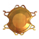
Nord BucklerAn effective method of protection, with sufficient skill.
Zo kom je eraan
- Maken: Black Forge (niveau 4) uit 10 × Bloodgold, 1 ×
 Mould: Nord Buckler, 10 ×
Mould: Nord Buckler, 10 ×  Timberwood · per upgrade: 5 × Bloodgold, 5 × Timberwood
Timberwood · per upgrade: 5 × Bloodgold, 5 × Timberwood - Bereiden: Frost Foundry uit
 Cast: Nord Buckler
Cast: Nord Buckler
 Nord Greatshield
Nord Greatshield
Your foes can't hit you if they can't see you!
Zo kom je eraan
- Maken: Black Forge (niveau 4) uit 20 × Bloodgold, 1 ×
 Mould: Nord Greatshield, 20 × Timberwood · per upgrade: 10 × Bloodgold, 10 × Timberwood
Mould: Nord Greatshield, 20 × Timberwood · per upgrade: 10 × Bloodgold, 10 × Timberwood - Bereiden: Frost Foundry uit
 Cast: Nord Greatshield
Cast: Nord Greatshield
 Nord Shield
Nord Shield
Stay safe, and do so in style.
Zo kom je eraan
- Maken: Black Forge (niveau 4) uit 15 × Bloodgold, 1 ×
 Mould: Nord Shield, 10 × Timberwood · per upgrade: 8 × Bloodgold, 5 × Timberwood
Mould: Nord Shield, 10 × Timberwood · per upgrade: 8 × Bloodgold, 5 × Timberwood - Bereiden: Frost Foundry uit
 Cast: Nord Shield
Cast: Nord Shield
 Odins cape
Odins cape
Odins beste krijgers verdienen de beste stof.
Zo kom je eraan
- Maken: Werkbank uit 10 × Leren banden, 4 ×
 Kool · per upgrade: 5 × Leren banden, 2 × Kool
Kool · per upgrade: 5 × Leren banden, 2 × Kool
 Odins kap
Odins kap
Odins beste krijgers verdienen de beste stof.
Zo kom je eraan
- Maken: Werkbank uit 10 × Leren banden, 4 × Kool · per upgrade: 5 × Leren banden, 2 × Kool
 Patterns of the Bear
Patterns of the Bear
If these intricate designs can protect warriors from distant lands, they can surely protect you too.
Zo kom je eraan
 Plain Blue Dress
Plain Blue Dress
A plain blue dress, worn over a red underdress.
Zo kom je eraan
- Kopen: Hildir · 350 munten · na het terugbrengen van Hildir's Brass Chest
 Plain Blue Tunic
Plain Blue Tunic
A plain blue tunic, brightly dyed.
Zo kom je eraan
- Kopen: Hildir · 350 munten · na het terugbrengen van Hildir's Brass Chest
 Plain Brown Dress
Plain Brown Dress
A plain brown dress, worn over a blue underdress.
Zo kom je eraan
- Kopen: Hildir · 350 munten · na het terugbrengen van Hildir's Brass Chest
 Plain Red Tunic
Plain Red Tunic
A plain red tunic, brightly dyed.
Zo kom je eraan
- Kopen: Hildir · 350 munten · na het terugbrengen van Hildir's Brass Chest
 Plain Yellow Dress
Plain Yellow Dress
A plain yellow dress, worn over a green underdress.
Zo kom je eraan
- Kopen: Hildir · 350 munten · na het terugbrengen van Hildir's Brass Chest
 Plain Yellow Tunic
Plain Yellow Tunic
A plain yellow tunic, brightly dyed.
Zo kom je eraan
- Kopen: Hildir · 350 munten · na het terugbrengen van Hildir's Brass Chest
 Pulsating Earrings
Pulsating Earrings
If you listen carefully, you can hear the faint echoes of lost souls...
Zo kom je eraan
- Maken: Black Forge uit 5 × Carapace, 5 × Refined Eitr, 1 ×
 Gjall Trophy
Gjall Trophy
 Red Tunic with Beads
Red Tunic with Beads
A red tunic worn with beads and bronze jewelry. Sure to attract attention from other vikings.
Zo kom je eraan
- Kopen: Hildir · 550 munten · na het terugbrengen van Hildir's Bronze Chest
 Red Tunic with Cape
Red Tunic with Cape
A red tunic, worn with a fashionable cape made from fine green wool.
Zo kom je eraan
- Kopen: Hildir · 450 munten · na het terugbrengen van Hildir's Silver Chest
 Red Twisted Headscarf
Red Twisted Headscarf
A fancy red headscarf.
Zo kom je eraan
- Kopen: Hildir · 300 munten · na het terugbrengen van Hildir's Bronze Chest
 Resounding Shackle
Resounding Shackle
A razor-sharp ankle chain. Can it truly be comfortable?
Zo kom je eraan
- Maken: Black Forge uit 5 × Refined Eitr, 5 × Scale Hide, 1 × Mandible, 1 ×
 Seeker Trophy
Seeker Trophy
 Robes of Embla
Robes of Embla
Imbued with the power of the first sorceress, these robes will grant a boon to any who seeks to wield the ancient art of magic.
Zo kom je eraan
- Maken: Galdr Table (niveau 2) uit 20 × Linnen draad, 20 × Refined Eitr, 10 × Asksvin Hide, 5 × Vlammetaal · per upgrade: 10 × Linnen draad, 5 × Refined Eitr, 2 × Vlammetaal
 Robes of the Caller
Robes of the Caller
Gold trimmed robes, fit for only the most powerful of mages.
Zo kom je eraan
- Maken: Galdr Table (niveau 3) uit 6 × Bloodgold, 1 ×
 Mould: Robes of the Caller, 6 × Moose Hide, 5 × Nornathread · per upgrade: 3 × Bloodgold, 3 × Moose Hide, 3 × Nornathread
Mould: Robes of the Caller, 6 × Moose Hide, 5 × Nornathread · per upgrade: 3 × Bloodgold, 3 × Moose Hide, 3 × Nornathread - Bereiden: Frost Foundry uit
 Cast: Robes of the Caller
Cast: Robes of the Caller
 Root Harnesk
Root Harnesk
Van stevige maak en sterk genoeg op zelfs de scherpste zwaarden tegen te houden.
Zo kom je eraan
- Maken: Werkbank (niveau 2) uit 10 × Root, 10 × Oeroude bast, 2 × Hertenpels · per upgrade: 2 × Root, 5 × Oeroude bast
 Root Leggings
Root Leggings
A light armour oddly woven together by ancient roots and bark.
Zo kom je eraan
- Maken: Werkbank (niveau 2) uit 10 × Root, 10 × Oeroude bast, 2 × Hertenpels · per upgrade: 2 × Root, 5 × Oeroude bast
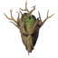
Root MaskYour head fits perfectly inside this knot of roots and bark.
Zo kom je eraan
- Maken: Werkbank (niveau 2) uit 10 × Root, 10 × Oeroude bast, 4 × Leren banden · per upgrade: 2 × Root, 5 × Oeroude bast
 Schild van serpentschubben
Schild van serpentschubben
Een stevig schild van schubben die overlappen.
Zo kom je eraan
- Maken: Smidse (niveau 3) uit 10 ×
 Fijn hout, 4 × IJzer, 8 × Serpentenschub · per upgrade: 10 × Fijn hout, 2 × IJzer, 4 × Serpentenschub
Fijn hout, 4 × IJzer, 8 × Serpentenschub · per upgrade: 10 × Fijn hout, 2 × IJzer, 4 × Serpentenschub
 Shield of Roots
Shield of Roots
Malleable roots have been twisted into a surprisingly sturdy shield.
Zo kom je eraan
- Maken: Werkbank (niveau 2) uit 10 × Fijn hout, 1 × Writhan Roots · per upgrade: 5 × Fijn hout, 2 × Writhan Roots
 Silver Shield
Silver Shield
Een schild van stralend zilver.
Zo kom je eraan
 Simple Purple Cap
Simple Purple Cap
A simple yet fashionable purple cap.
Zo kom je eraan
- Kopen: Hildir · 150 munten
 Simple Red Cap
Simple Red Cap
A simple yet fashionable red cap.
Zo kom je eraan
- Kopen: Hildir · 150 munten
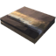
Simple Undyed DressA simple dress for everyday wear.
Zo kom je eraan
- Kopen: Hildir · 250 munten
 Simple Undyed Tunic
Simple Undyed Tunic
A simple tunic for everyday wear.
Zo kom je eraan
- Kopen: Hildir · 250 munten
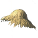
Straw HatThe perfect way to avoid sunstroke.
Zo kom je eraan
- Kopen: Hildir · 300 munten · na het terugbrengen van Hildir's Brass Chest
 Trolleren broek
Trolleren broek
Legging van ruige trollenhuid.
Zo kom je eraan
- Maken: Werkbank (niveau 2) uit 5 × Trollenhuid · per upgrade: 2 × Trollenhuid
 Trolleren helm
Trolleren helm
Trollenhuid is lastig om mee te werken, maar je kunt er uitzonderlijke lichaamsbescherming mee maken.
Zo kom je eraan
- Maken: Werkbank (niveau 2) uit 5 × Trollenhuid, 3 × Bottenfragmenten · per upgrade: 2 × Trollenhuid, 1 × Bottenfragmenten
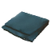
Trolleren tuniekTrollen zijn lastig te villen maar hun leer is stevig en warm.
Zo kom je eraan
- Maken: Werkbank (niveau 2) uit 5 × Trollenhuid · per upgrade: 2 × Trollenhuid
 Trousers of Ask
Trousers of Ask
The first man to roam Midgard preferred to tread lightly. Wearers of these trousers could learn a thing or two from him.
Zo kom je eraan
- Maken: Black Forge (niveau 3) uit 15 × Linnen draad, 4 × Hossenpels, 10 × Asksvin Hide · per upgrade: 10 × Linnen draad, 2 × Hossenpels, 5 × Asksvin Hide
 Trousers of Embla
Trousers of Embla
Whether or not the first sorceress actually wore trousers exactly like these, we can never know.
Zo kom je eraan
- Maken: Galdr Table (niveau 2) uit 20 × Linnen draad, 20 × Refined Eitr, 10 × Asksvin Hide · per upgrade: 10 × Linnen draad, 5 × Refined Eitr
 Trousers of the Caller
Trousers of the Caller
Tight legwraps to keep the cold from touching your skin.
Zo kom je eraan
- Maken: Galdr Table (niveau 3) uit 6 × Bloodgold, 1 ×
 Mould: Trousers of the Caller, 6 × Moose Hide, 5 × Nornathread · per upgrade: 3 × Bloodgold, 3 × Moose Hide, 3 × Nornathread
Mould: Trousers of the Caller, 6 × Moose Hide, 5 × Nornathread · per upgrade: 3 × Bloodgold, 3 × Moose Hide, 3 × Nornathread - Bereiden: Frost Foundry uit
 Cast: Trousers of the Caller
Cast: Trousers of the Caller
 Trousers of the Protector
Trousers of the Protector
Heavy boots and trousers, to keep you warm as you trudge through deep snow.
Zo kom je eraan
- Maken: Black Forge (niveau 4) uit 20 × Bloodgold, 1 ×
 Mould: Trousers of the Protector, 8 × Moose Hide, 4 × Leather Straps · per upgrade: 15 × Bloodgold, 3 × Moose Hide, 3 × Leather Straps
Mould: Trousers of the Protector, 8 × Moose Hide, 4 × Leather Straps · per upgrade: 15 × Bloodgold, 3 × Moose Hide, 3 × Leather Straps - Bereiden: Frost Foundry uit
 Cast: Trousers of the Protector
Cast: Trousers of the Protector
 Trousers of the Vanguard
Trousers of the Vanguard
Warm trousers suitable for a cold climate. The boots offer excellent grip in the icy terrain.
Zo kom je eraan
- Maken: Black Forge (niveau 4) uit 12 × Bloodgold, 1 ×
 Mould: Trousers of the Vanguard, 8 × Elaking Hair Bundle, 4 × Seal Pelt · per upgrade: 6 × Bloodgold, 4 × Elaking Hair Bundle, 2 × Seal Pelt
Mould: Trousers of the Vanguard, 8 × Elaking Hair Bundle, 4 × Seal Pelt · per upgrade: 6 × Bloodgold, 4 × Elaking Hair Bundle, 2 × Seal Pelt - Bereiden: Frost Foundry uit
 Cast: Trousers of the Vanguard
Cast: Trousers of the Vanguard
 Vilebone Cage
Vilebone Cage
Crafted from the shattered bones of a tormented bear.
Zo kom je eraan
- Maken: Smidse (niveau 2) uit 4 × Bear Hide, 3 ×
 Vile Ribcage, 4 × Linnen draad · per upgrade: 2 × Bear Hide, 1 × Vile Ribcage, 1 × Linnen draad
Vile Ribcage, 4 × Linnen draad · per upgrade: 2 × Bear Hide, 1 × Vile Ribcage, 1 × Linnen draad
 Vilebone Drapes
Vilebone Drapes
Thick hides and bone fragments woven into a rugged skirt.
Zo kom je eraan
- Maken: Smidse (niveau 2) uit 10 × Bear Hide, 1 × Vile Ribcage, 4 × Linnen draad · per upgrade: 5 × Bear Hide, 1 × Vile Ribcage, 1 × Linnen draad
 Vilebone Visage
Vilebone Visage
Inspiring fear in foes and courage in kin when worn.
Zo kom je eraan
- Maken: Smidse (niveau 2) uit 5 × Bear Hide, 1 ×
 Vile Trophy · per upgrade: 2 × Bear Hide
Vile Trophy · per upgrade: 2 × Bear Hide
 Voddenbroek
Voddenbroek
Een eenvoudig geneesmiddel voor naaktheid.
Zo kom je eraan
- Maken: Werkbank uit 5 × Leren banden · per upgrade: 5 × Leren banden
 Voddentuniek
Voddentuniek
Beter dan niets.
Zo kom je eraan
- Maken: Werkbank uit 5 × Leren banden · per upgrade: 5 × Leren banden
 Vorkbeen
Vorkbeen
Dit oude bot kent de locatie van vele vergeten dingen.
Zo kom je eraan
- Buit van: Bottenmassa · Moeras
 Wisplight
Wisplight
A bound wisp to guide you through the thickest of mists.
Zo kom je eraan
 Witch Crown
Witch Crown
They say that the soul of a witch can grant strange powers to mortals...
Zo kom je eraan
- Maken: Black Forge uit 5 × Bloodgold, 5 × Nornathread, 1 ×
 Hexen Trophy
Hexen Trophy
 Wolf Sight
Wolf Sight
Assume the sharp and furious mind of a wolf.
Zo kom je eraan
- Maken: Smidse uit 5 × Zilver, 5 ×
 Wolventand, 1 ×
Wolventand, 1 ×  Fenringtrofee
Fenringtrofee
 Wolfharnas borststuk
Wolfharnas borststuk
Een wambuis van wolfshuid die er warm en wild uitziet. Beschermt tegen de kou.
Zo kom je eraan
- Maken: Smidse (niveau 2) uit 20 × Zilver, 5 × Wolvenpels, 1 ×
 Ketting · per upgrade: 5 × Zilver, 2 × Wolvenpels
Ketting · per upgrade: 5 × Zilver, 2 × Wolvenpels
 Wolfharnas onderstuk
Wolfharnas onderstuk
Harige broek van wolfshuid.
Zo kom je eraan
- Maken: Smidse (niveau 2) uit 20 × Zilver, 5 × Wolvenpels, 4 × Wolventand · per upgrade: 5 × Zilver, 2 × Wolvenpels, 1 × Wolventand
 Wolfsbonten cape
Wolfsbonten cape
Wolven zijn van nature overlevers. Deze had gewoon pech. Nu houdt zijn huid je warm in de sneeuw.
Zo kom je eraan
- Maken: Werkbank (niveau 2) uit 6 × Wolvenpels, 4 × Zilver, 1 ×
 Wolftrofee · per upgrade: 4 × Wolvenpels, 2 × Zilver
Wolftrofee · per upgrade: 4 × Wolvenpels, 2 × Zilver
 Yellow Dress with Beads
Yellow Dress with Beads
A fancy yellow dress, with beads and silver fibula brooches. Excellent for a feast!
Zo kom je eraan
- Kopen: Hildir · 550 munten · na het terugbrengen van Hildir's Bronze Chest
 Yellow Dress with Shawl
Yellow Dress with Shawl
A yellow dress, with a purple shawl around the shoulders. Warm and stylish!
Zo kom je eraan
- Kopen: Hildir · 450 munten · na het terugbrengen van Hildir's Silver Chest
 Yellow Tied Headscarf
Yellow Tied Headscarf
A practical yellow headscarf.
Zo kom je eraan
- Kopen: Hildir · 250 munten · na het terugbrengen van Hildir's Silver Chest
 Yellow Tunic with Beads
Yellow Tunic with Beads
A yellow tunic worn with beads and silver jewelry. Sure to attract attention from other vikings.
Zo kom je eraan
- Kopen: Hildir · 550 munten · na het terugbrengen van Hildir's Bronze Chest
 Yellow Tunic with Cape
Yellow Tunic with Cape
A yellow tunic, worn with a fashionable cape made from fine purple wool.
Zo kom je eraan
- Kopen: Hildir · 450 munten · na het terugbrengen van Hildir's Silver Chest
 Zwartmetalen schild
Zwartmetalen schild
Gemaakt van het sterkste metaal, en kan zelfs de dodelijkste steekwapens afweren.
Zo kom je eraan
- Maken: Smidse (niveau 3) uit 10 × Fijn hout, 8 × Zwart metaal, 5 × Ketting · per upgrade: 10 × Fijn hout, 4 × Zwart metaal, 2 × Ketting
 Zwartmetalen scutum
Zwartmetalen scutum
Een scutum van glinsterend zwart metaal.
Zo kom je eraan
- Maken: Smidse (niveau 3) uit 15 × Fijn hout, 10 × Zwart metaal, 7 × Ketting · per upgrade: 10 × Fijn hout, 4 × Zwart metaal, 2 × Ketting